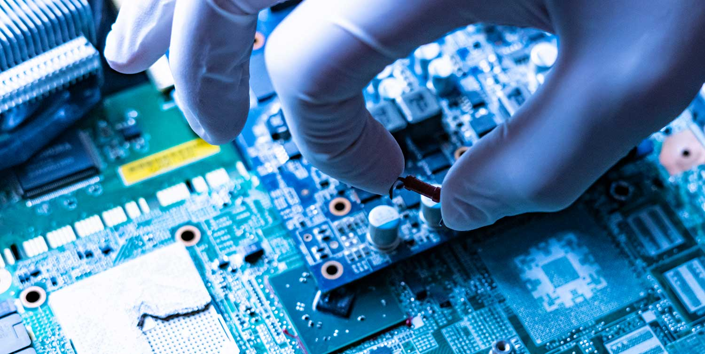

Fundamentos de la electronica digital
¿Cuales son los fundamentos de la electronica digital?
La electrónica digital es una rama fundamental de la ingeniería que se encarga del estudio, diseño y aplicación de sistemas que procesan información en forma binaria, es decir, utilizando únicamente dos estados: 0 y 1.
Estos estados corresponden a niveles de voltaje que representan valores lógicos, y permiten la construcción de circuitos capaces de realizar operaciones aritméticas, lógicas, de control y almacenamiento.
Gracias a sus principios basados en el sistema binario y la lógica booleana, la electrónica digital es la base tecnológica de casi todos los dispositivos modernos, desde computadoras y teléfonos móviles hasta automóviles y sistemas automatizados. Sus fundamentos son los siguientes:
1. Sistema binario
La electrónica digital se basa en el sistema binario, que solo usa dos dígitos: 0 y 1. Estos valores representan los estados bajo (apagado) y alto (encendido) de un voltaje eléctrico. En la práctica, el 0 puede ser 0V y el 1 puede ser 5V o 3.3V, dependiendo de la tecnología del circuito.
2. Lógica booleana
La lógica booleana es la base matemática de la electrónica digital. Se usa para expresar y simplificar operaciones lógicas mediante variables binarias y operadores como: AND (Y) OR (O) NOT (NO) NAND, NOR, XOR, XNOR. Estas operaciones se implementan en el hardware con compuertas lógicas.
3. Compuertas lógicas
Son los bloques básicos de cualquier circuito digital. Cada compuerta realiza una operación lógica específica. Por ejemplo: La compuerta AND solo da 1 si ambas entradas son 1. La compuerta OR da 1 si al menos una entrada es 1. La compuerta NOT invierte el valor: si es 0, da 1 y viceversa. Estas compuertas se combinan para construir circuitos más complejos.
4. Álgebra de Boole
Es el conjunto de reglas que permite simplificar expresiones lógicas. Esto es útil para optimizar circuitos (menos compuertas = menos consumo y costo). Por ejemplo:
- A + 0 = A
- A · 1 = A
- A + A = A
- A · A = A
- A + A' = 1 (A más su negación es igual a 1)
5. Circuitos combinacionales
Son circuitos cuya salida depende únicamente del estado actual de sus entradas. No tienen memoria. Algunos ejemplos:
- Sumadores
- Multiplexores
- Comparadores
- Codificadores/Decodificadores.
6. Circuitos secuenciales
Aquí la salida depende tanto de las entradas actuales como de los estados anteriores (es decir, tienen memoria). Se construyen con flip-flops, que son circuitos capaces de almacenar un bit. Ejemplos de circuitos secuenciales: Contadores, Registros, Máquinas de estado.
7. Sistemas numéricos
Además del binario, también se usan otros sistemas como: Decimal (base 10): el sistema que usamos normalmente. Octal (base 8) y Hexadecimal (base 16): útiles para representar datos binarios de forma más compacta.
8. Microcontroladores y sistemas embebidos
Además del binario, también se usan otros sistemas como: Decimal (base 10): el sistema que usamos normalmente. Octal (base 8) y Hexadecimal (base 16): útiles para representar datos binarios de forma más compacta.
Tabla de Conversión: Decimal, Binario y Hexadecimal
| Decimal | Binario (8 bits) | Hexadecimal |
|---|---|---|
| 0 | 00000000 | 0 |
| 1 | 00000001 | 1 |
| 2 | 00000010 | 2 |
| 3 | 00000011 | 3 |
| 4 | 00000100 | 4 |
| 5 | 00000101 | 5 |
| 6 | 00000110 | 6 |
| 7 | 00000111 | 7 |
| 8 | 00001000 | 8 |
| 9 | 00001001 | 9 |
| 10 | 00001010 | A |
| 11 | 00001011 | B |
| 12 | 00001100 | C |
| 13 | 00001101 | D |
| 14 | 00001110 | E |
| 15 | 00001111 | F |